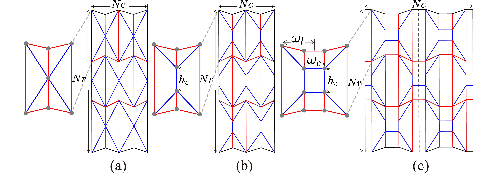
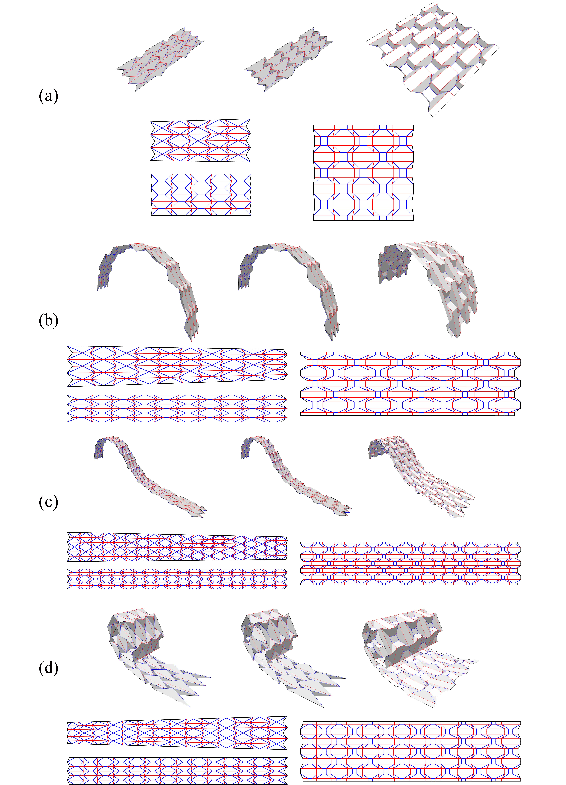
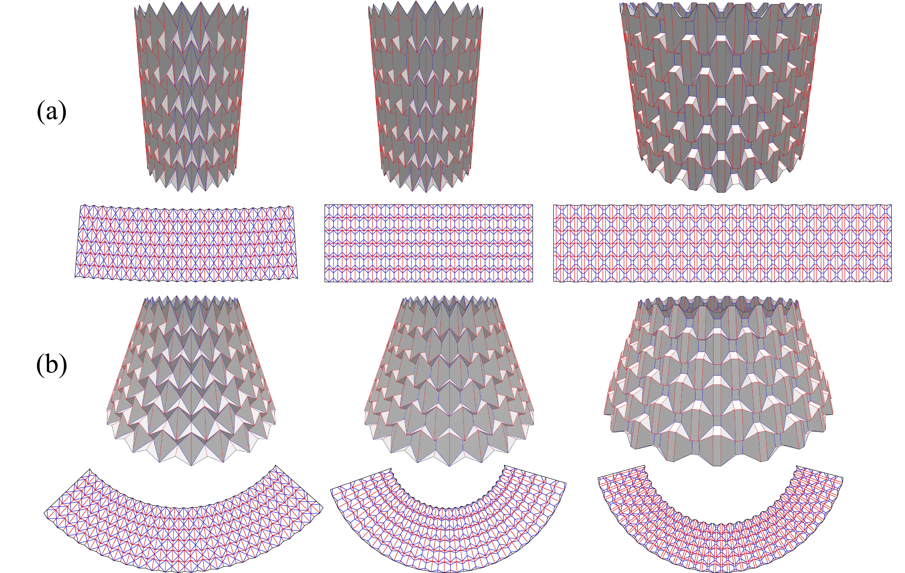
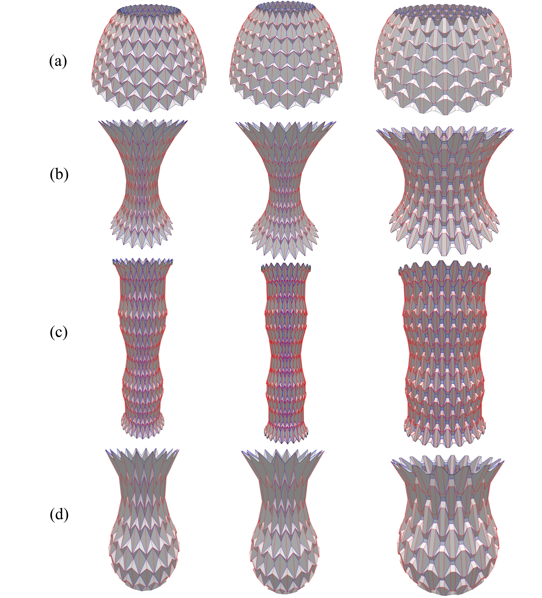
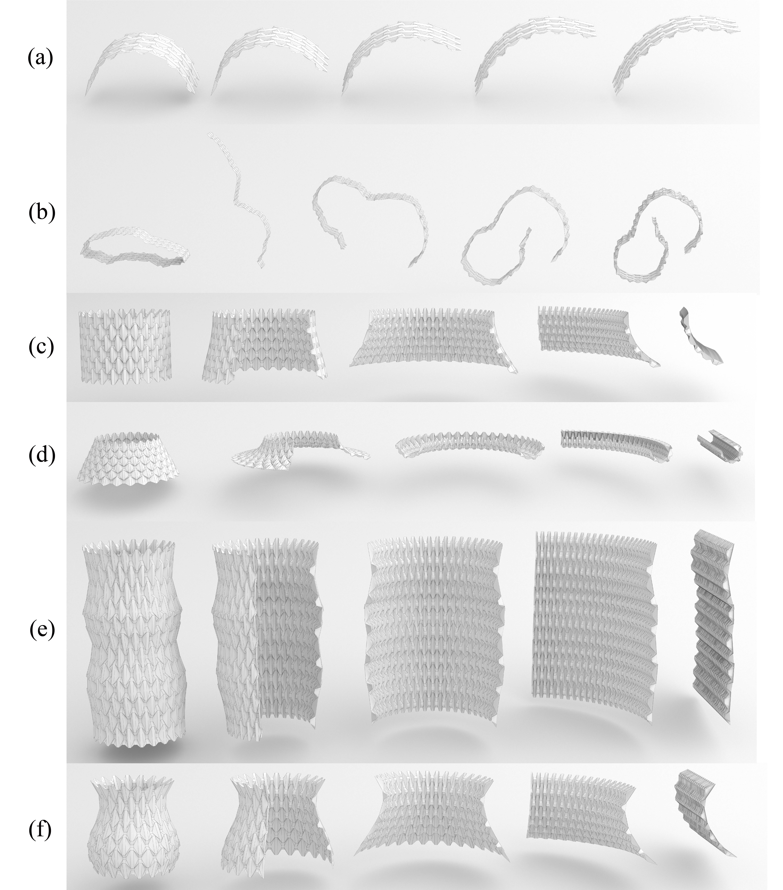

Inverse Modeling of Symmetrical Surface based on the Seven-crease Waterbomb and Lattice Tessellations
Zhigang Shen, and Yan Zhao*
Jiangsu University
Abstract:
Tessellation design is widely used in modeling 3D origami structures. To expand tessellation types and enhance stability, a symmetric modeling method based on the seven-crease waterbomb and lattice tessellations is proposed, enabling reversible unfolding between 3D models and 2D crease patterns. Firstly, the seven-crease waterbomb tessellation is formed by stretching the center points of the six-crease waterbomb tessellation into edges. Then, generalized cylindrical and axisymmetric surfaces are approximated by the seven-crease tessellation with constraints on foldability, planarity and section. The center edges of the optimized seven-crease tessellation are expanded into surfaces to generate the lattice tessellation. The model is unfolded to obtain the crease pattern, and its rigid folding motion is simulated and analyzed. Experi-mental results on modeling and rigid folding simulations show that, compared to the six-crease tessellation, the seven-crease and lattice tessellations reduce the risk of internal self-intersection while maintaining the deformability. This method provides a feasible solution for constructing 3D origami models and exploring mechanical structures.
Derivative design of origami tessellation

Results of generalized cylindrical model


Results of axisymmetric model


Rigid folding simulation of lattice tessellation model

Folding simulation video of generalized cylindrical model
Folding simulation video of axisymmetric model
Folding simulation video of non developable axisymmetric model
Publications:
- Shen Zhigang, and Zhao yan*:"Inverse Modeling of Symmetrical Surface based on the Seven-crease Waterbomb and Lattice Tessellations", Journal of Computer-Aided Design & Computer Graphics. ([DOI:10.3724/SP.J.1089.2024-00669])
BibTeX Citation
title={Inverse Modeling of Symmetrical Surface based on the Seven-crease Waterbomb and Lattice Tessellations},
author={Shen Zhigang and Zhao Yan},
journal={Journal of Computer-Aided Design & Computer Graphics},
year = {2025},
doi = {10.3724/SP.J.1089.2024-00669},
url = {https://www.jcad.cn/article/doi/10.3724/SP.J.1089.2024-00669},
}